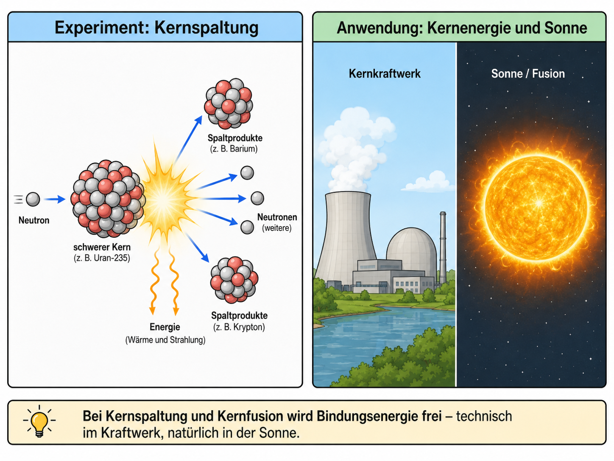

Kernspaltung, Kernfusion und Massendefekt
Wie kann aus einem kleinen Massendefekt viel Energie werden?

1Leitfrage, Vorwissen und Vernetzung
Leitfrage: Wie kann aus einem kleinen Massendefekt viel Energie werden?
Das brauchst du vorher
Das wird später wichtig
Zielkompetenzen
- Energiefreisetzung über Massendefekt und \(E=\Delta m c^2\) erklären.
- Bindungsenergie pro Nukleon zur Einordnung von Fusion und Spaltung nutzen.
- Nutzen und Risiken von Kernenergie und Fusion quellenkritisch beurteilen.
2Lokale Simulation: vorhersagen – beobachten – erklären
Diese Simulation läuft lokal im Lernpfad. Verändere zunächst nur eine Größe und notiere, was sich ändert.
3Ergänzende Simulationen und Materialien
Externe Simulationen werden als Buttons geöffnet. Auf dem iPad funktioniert das stabiler als ein eingebettetes Fremdfenster.
Arbeite nach dem Muster: vorhersagen - beobachten - erklären.
PhET: Nuclear Fission HTML5Arbeite nach dem Muster: vorhersagen - beobachten - erklären.
LEIFI: Kernspaltung und KernfusionFachtexte und Aufgaben zur Energiebilanz nutzen.
PhET: Nuclear FissionKettenreaktion und Reaktorsteuerung mit Kontrollstäben untersuchen.
PhET: Alpha DecayOptionaler Rückbezug: Kernumwandlungen und Energieänderungen vergleichen.
4Experimente mit Durchführung, Auswertung und Protokoll
Wähle je nach Ausstattung einen Realversuch, eine Demo, eine Simulation oder eine Datenauswertung. Beobachtung und Deutung werden getrennt protokolliert.
1. Kettenreaktion mit Dominosteinen oder MausefallenModellversuch / Demo
Material
Dominosteine oder Mausefallen mit Tischtennisbällen, Schutzbrille, großer Abstand; alternativ Video.
Durchführung
Die Anfangsbedingung wird verändert: Dichte der Elemente, Absorber/Moderator als Unterbrechung, Startneutron.
Auswertung
Die Auswertung trennt Modell und Realität: Kettenreaktion hängt von Wahrscheinlichkeit, Geometrie und Steuerung ab; Kontrollstäbe absorbieren Neutronen im Reaktormodell.
Protokoll
Skizze des Modells mit Zuordnung: Neutron, Kern, Absorber, unkontrollierte/kontrollierte Kettenreaktion.
Quelle/Anregung: PhET: Nuclear Fission
2. Bindungsenergie-Kurve als SortierexperimentSchülerversuch / Modellarbeit
Material
Karten mit Nukliden, Massenzahl und Bindungsenergie pro Nukleon, Achsenplakat.
Durchführung
Karten werden nach Massenzahl sortiert und zu einer Kurve gelegt. Danach werden Spaltung und Fusion mit Pfeilen eingezeichnet.
Auswertung
Energie wird frei, wenn Produkte im Mittel stärker gebunden sind. Fusion leichter Kerne und Spaltung schwerer Kerne führen näher zum Maximum der Kurve.
Protokoll
Kurve mit Pfeilen, Fachsatz zur Bindungsenergie und Beispielrechnung.
Quelle/Anregung: LEIFI-Physik: Kernspaltung und Kernfusion
3. Massendefekt-RechenprotokollRechenexperiment / Prüfungsformat
Material
Massentabelle, Taschenrechner, Formelkarte \(E=\Delta m c^2\).
Durchführung
Für eine Kernreaktion werden Edukte und Produkte massenmäßig verglichen. \(\Delta m\) wird in u und MeV umgerechnet.
Auswertung
\(1\,\mathrm{u}c^2\approx 931{,}5\,\mathrm{MeV}\). Die Lernenden prüfen Vorzeichen, Einheiten und Plausibilität.
Protokoll
Rechenprotokoll: Reaktionsgleichung, Massenbilanz, \(\Delta m\), Energie in MeV und J, Interpretation.
Quelle/Anregung: LEIFI-Physik: Kernspaltung und Kernfusion
4. Bindungsenergie-KurvenpuzzleErgänzender Versuch / Auswertung
Material
Karten mit Kernen, Massenzahl, Bindungsenergie pro Nukleon und Reaktionsrichtung.
Durchführung
Karten werden auf einer Kurve angeordnet; mögliche Energiegewinne werden markiert.
Auswertung
Fusion leichter Kerne und Spaltung schwerer Kerne führen in Richtung stärker gebundener Kerne.
Protokoll
Protokolliere Fragestellung, Vermutung, Durchführung, Beobachtung, Auswertung, Fehlerquellen und einen Ergebnissatz.
Quelle/Anregung: Ergänzung für Q2-GK-Lernpfad, angelehnt an LEIFI/PhET/FU-Berlin/Leybold-Kontexte
Digitales Protokoll
5Interaktive Messdaten- und Diagrammauswertung
Lies Achsen und Einheiten genau. Nutze den Graphen als Material, wie es in Klausuren häufig vorkommt.
6Formelarbeit und adaptive Hilfe
Formel umstellen
1. Gesuchte Größe markieren. 2. Formel symbolisch umstellen. 3. Einheiten umrechnen. 4. Zahlen einsetzen. 5. Ergebnis mit Einheit deuten.
Einheitenanker
\(1\,\mathrm{nm}=10^{-9}\,\mathrm{m}\), \(1\,\mathrm{pm}=10^{-12}\,\mathrm{m}\), \(1\,\mathrm{eV}=1{,}602\cdot10^{-19}\,\mathrm{J}\), \(1\,\mathrm{kV}=1000\,\mathrm{V}\).
7Problematisch falsche Aussage korrigieren
Problematisch falsche Aussage: Bei Kernspaltung wird Masse vernichtet und verschwindet einfach.
Aufgabe: Markiere gedanklich den problematischen Teil. Korrigiere die Aussage so, dass sie fachlich präzise und für Q2-Grundkurs verständlich ist.
8Klausur- und Prüfungstraining
Prüfungstraining mit Material
Material: Bei einer Kernreaktion beträgt der Massendefekt \(0{,}18\,\mathrm{u}\). Es gilt \(1\,\mathrm{u}c^2\approx 931{,}5\,\mathrm{MeV}\).
- Berechnen Sie die freiwerdende Energie.
- Ordnen Sie den Prozess mithilfe der Bindungsenergiekurve ein.
- Beurteilen Sie die Formulierung „Masse wird vernichtet“.
Musterlösung gestuft anzeigen
\(E\approx 168\,\mathrm{MeV}\). Masse verschwindet nicht, sondern die Ruheenergie des Systems ändert sich und wird als Energie frei.
Operatorencheck
- Beschreiben: Was ist sichtbar oder gegeben?
- Auswerten: Welche Größe wird aus Daten, Diagramm oder Formel gewonnen?
- Erklären: Welches Modell begründet den Befund?
- Beurteilen: Welche Aussage ist tragfähig, welche Grenze muss genannt werden?
9Sichern, vernetzen und KI-Diagnose
Schreibe eine Drei-Satz-Sicherung: 1. zentraler Befund, 2. passende Formel/Modellidee, 3. typische Fehlerquelle.